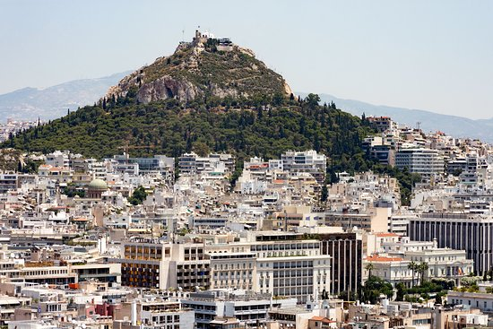
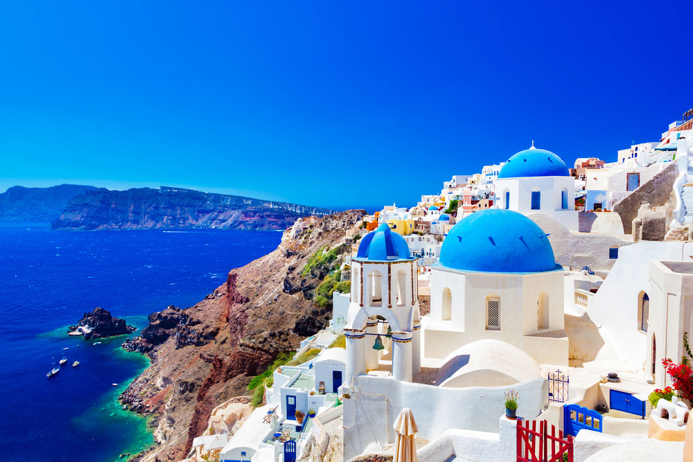

|
|
Best Place To Visit In Greece
Meteora
The Meteora is a rock formation in central Greece hosting one of the largest and most precipitously built complexes of Eastern Orthodox monasteries, second in importance only to Mount Athos. The six monasteries are built on immense natural pillars and hill-like rounded boulders that dominate the local area.Meteora is located near the town of Kalabaka at the northwestern edge of the Plain of Thessaly near the Pineios river and Pindus Mountains. Beside the Pindos Mountains, in the western region of Thessaly, these unique and enormous columns of rock rise precipitously from the ground. But their unusual form is not easy to explain geologically. |
Acropolis of Athens
The Acropolis of Athens is an ancient citadel located on a rocky outcrop above the city of Athens and contains the remains of several ancient buildings of great architectural and historical significance, the most famous being the Parthenon. The word acropolis is from the Greek words ἄκρον and πόλις.The term acropolis is generic and there are many other acropoleis in Greece. While there is evidence that the hill was inhabited as far back as the fourth millennium BC, it was Pericles in the fifth century BC who coordinated the construction of the buildings whose present remains are the site's most important ones, including the Parthenon, the Propylaea, the Erechtheion and the Temple of Athena Nike. |
Parthenon
The Parthenon is a former temple on the Athenian Acropolis, Greece, dedicated to the goddess Athena, whom the people of Athens considered their patroness. For a time, it served as the treasury of the Delian League, which later on became the Athenian Empire.an Ottoman ammunition dump inside the building was ignited by Venetian bombardment during a siege of the Acropolis.The resulting explosion severely damaged the Parthenon and its sculptures. The Parthenon was built in thanksgiving for Hellenic victory over Persian invaders during the Greco-Persian Wars. Like most Greek temples, the Parthenon also served as the city treasury |
Navagio
Navagio Beach, or Shipwreck Beach, is an exposed cove, sometimes referred to as "Smugglers Cove", on the coast of Zakynthos, in the Ionian Islands of Greece. Navagio Beach was originally known as Agios Georgios. In 2018, the beach was named as the world's best beach in a poll by over 1,000 travel journalists and professionals. The beach was briefly closed in 2018, and swimming and boat anchoring were forbidden, after a cliff above the beach collapsed. The beach reopened and anchoring is permitted, but with restrictions out of concerns over future landslides. |
 |
Temple of Olympian Zeus
The Temple of Olympian Zeus, also known as the Olympieion or Columns of the Olympian Zeus, is a former colossal temple at the center of the Greek capital Athens. It was dedicated to "Olympian" Zeus, a name originating from his position as head of the Olympian gods. During the Roman period the temple, which included 104 colossal columns, was renowned as the largest temple in Greece and housed one of the largest cult statues in the ancient world. During the Roman period the temple, which included 104 colossal columns, was renowned as the largest temple in Greece and housed one of the largest cult statues in the ancient world. |
Mount Lycabettus
Mount Lycabettus, also known as Lycabettos, Lykabettos or Lykavittos, is a Cretaceous limestone hill in the Greek capital Athens. At 277 meters above sea level, its summit is the highest point in Central Athens and pine trees cover its base.. The hill is a tourist destination and can be ascended by the Lycabettus Funicular, a funicular railway which climbs the hill from a lower terminus at Kolonaki. At its two peaks are the 19th century Chapel of St. George, a theatre, and a restaurant. Popular stories suggest it was once the refuge of wolves, which is possibly the origin of its name. Another etymology suggests a Pelasgian, pre-Mycenean, origin |
 |
Melissani Cave
Melissani Cave or Melissani Lake, also Melisani is a cave located on the island of Kefalonia, northwest of Sami, about 5 km Southeast of Agia Effimia, Northeast of Argostoli and Northwest of Poros. The Ionian Sea lies to the east with the Strait of Ithaca. Forests surround the cave and the mountain slope is to the west. Some say the water is so clear the boats look like they are floating on air. The lake's bottom is covered with stones. Plants grow at the opening of the cave. The color of the stone near the opening is stucco to honey-like brown. The cave was rediscovered in 1951 by Giannis Petrocheilos. |
Mount Parnassus
Mount Parnassus is a mountain range of central Greece that is and historically has been especially valuable to the Greek nation and the earlier Greek city-states for many reasons. In peace, it offers scenic views of the countryside, being a major international recreational site, with views of montane landscapes. The mountain is also the location of historical, archaeological, and other cultural sites, such as Delphi perched on the southern slopes of the mountain in a rift valley north of the Gulf of Corinth. Its melting snows are a source of municipal water to the surrounding communities. The mountain is composed of limestone, but also contains bauxite aluminum ore, which is mined and processed. |
Therasia
|  | Therasia is also known as Thirasía. It is an island in the volcanic island group of Santorini in the Greek Cyclades. It lies north-west of Nea Kameni, a small island formed in recent centuries by volcanic activity and thus marking the centre of the island group.Therasia is the second largest island of the group, the largest by far being Thera. Anciently, the island of Therasia possessed a town of the same name. Therasia is the second largest island of the group, the largest by far being Thera. Thirasia is also the book of Greek poet Dimitris Varos that became a music album and theatrical performance by Greek composer Giannis Markopoulos under the title Daring Communication. |